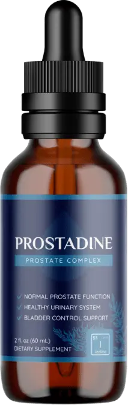
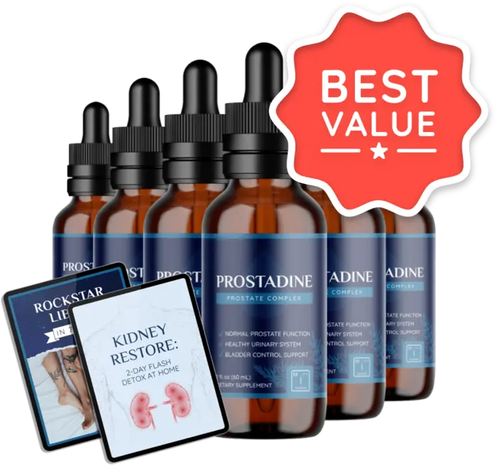
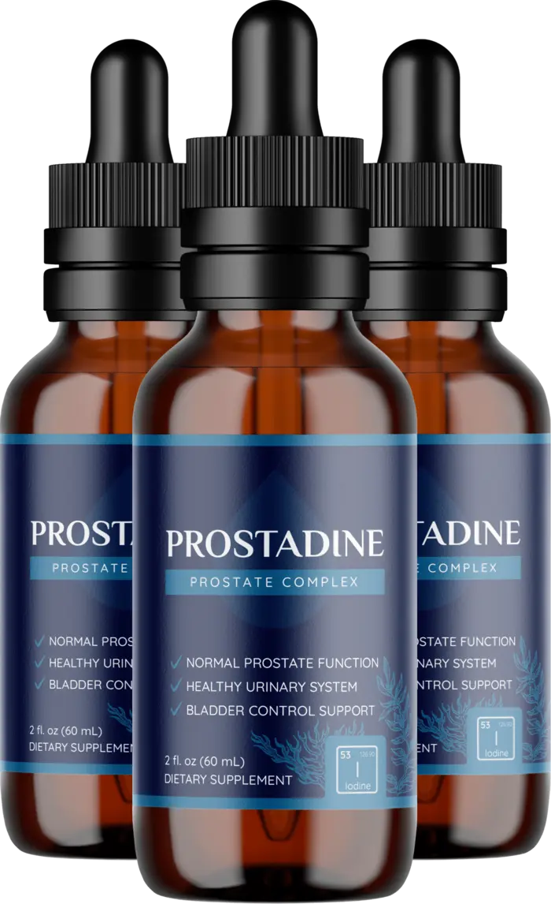

Prostadine is a daily liquid dietary supplement created to support normal prostate function, urinary wellness, and healthy bladder performance in adult men. It ships across Canada with pricing in Canadian dollars, and every official order is backed by a 60-day money-back guarantee.
Prostadine Canada – Natural Prostate Health & Daily Urinary Wellness Formula
Prostadine is formulated for men across Canada looking for nutritional support to help maintain normal prostate health and comfortable urinary function as they age. Instead of making unrealistic promises, the formula focuses on providing carefully selected plant-based ingredients that support everyday prostate wellness and healthy urinary flow when combined with a healthy lifestyle.
As men grow older, changes in prostate health may influence daily urinary comfort and overall quality of life. Prostadine delivers a convenient liquid formula designed for consistent daily use, helping support healthy prostate tissue, normal bladder function, and long-term urinary wellness through quality nutritional ingredients and regular healthy habits — with shipping available to every Canadian province and territory.
MR
Michael Reynolds
Men's Health Content Researcher | Dietary Supplement Editorial Specialist
Choose the Prostadine Package That Fits Your Health Goals Official Canadian Pricing (CAD) • Secure Checkout • Exclusive Bundle Savings
1 BOTTLE
30 Day Supply

CA$95/Bottle
Perfect for First-Time Customers
CA$137CA$95 Total
BEST VALUE
6 BOTTLES
180 Day Supply

CA$68/Bottle
Biggest Savings
FREE Canada-Wide Shipping
Includes 2 FREE eBooks
CA$820CA$406 Total
3 BOTTLES
90 Day Supply

CA$81/Bottle
Excellent Value
FREE Canada-Wide Shipping
90-Day Supply
CA$410CA$244 Total
Prostadine Prostate & Urinary Wellness
Why Thousands Of Canadian Men Choose Prostadine For Daily Prostate & Urinary Health Support
"Healthy prostate function plays an important role in everyday urinary comfort and overall well-being. A balanced diet, regular exercise, proper hydration, and targeted nutritional support can all contribute to maintaining normal prostate and urinary health. Prostadine is designed to complement these healthy lifestyle habits rather than replace them."
— Independent Men's Health Editorial Review
Supports Normal Prostate Function
Prostadine provides a carefully selected blend of naturally sourced ingredients formulated to help maintain healthy prostate function and support everyday urinary wellness as part of a balanced lifestyle.
Plant-Based Liquid Formula
The liquid formula combines botanical extracts and naturally derived nutrients chosen to complement daily prostate care and support healthy urinary function with convenient once-daily use.
Official Quality & Customer Confidence
Every official Prostadine order is manufactured under quality-focused standards and includes a 60-day money-back guarantee, giving Canadian customers added confidence with every purchase.
Prostadine Formula Overview
What Is Prostadine And How Does It Support Everyday Prostate Wellness?
Prostadine is a liquid dietary supplement developed to support normal prostate function, urinary wellness, and overall men's health through a combination of plant-based ingredients and naturally sourced nutrients. It is intended to complement a healthy lifestyle and should not be considered a substitute for professional medical care.
Prostadine is designed for men across Canada who want additional nutritional support for maintaining normal prostate health as they age. The easy-to-use liquid formula fits seamlessly into a daily wellness routine and is intended to work alongside healthy eating habits, regular physical activity, and proper hydration.
The formula contains a carefully selected blend of botanical extracts and marine-sourced ingredients traditionally used in nutritional supplements for prostate and urinary wellness. These ingredients are included to help support normal urinary function and healthy prostate performance without relying on unrealistic promises or exaggerated claims.
Unlike products that claim overnight transformations, Prostadine focuses on long-term nutritional support. Consistent daily use, combined with positive lifestyle choices, may help maintain normal urinary comfort and overall prostate wellness over time. Individual experiences can vary depending on personal health and daily habits.
The convenient liquid serving is simple to take each day, making it easier for busy adults to remain consistent with their wellness routine. Building healthy habits and following the recommended serving instructions can help users stay committed to their long-term health goals.
Before using Prostadine, carefully review the ingredient list, recommended directions, and product information provided on the official website. Anyone with an existing medical condition, those taking prescription medications, or individuals with specific health concerns should consult a qualified healthcare professional before starting any dietary supplement.
With quality-focused manufacturing, official website purchasing, value bundle options, promotional savings in Canadian dollars, free shipping across Canada on qualifying packages, complimentary bonus eBooks where available, and a 60-day money-back guarantee, Prostadine offers a convenient nutritional option for Canadian men seeking additional support for healthy prostate function and everyday urinary wellness.
Prostadine is a liquid dietary supplement formulated to support normal prostate function, healthy urinary flow, and everyday men's wellness. Featuring a blend of plant-based extracts and naturally sourced ingredients, Prostadine is designed to complement a balanced diet, regular exercise, and healthy lifestyle habits while providing nutritional support for long-term prostate and urinary health.
Prostate Health • Urinary Wellness • Daily Liquid Nutrition
· Produced Under Quality-Focused Manufacturing Standards
How Prostadine Supports Daily Prostate Health & Urinary Function
Prostadine is designed to provide daily nutritional support for normal prostate health and urinary wellness. Its liquid formula combines carefully selected botanical extracts and naturally sourced nutrients that work alongside healthy lifestyle habits to help maintain comfortable urinary function, healthy prostate performance, and overall men's wellness.
Supports Healthy Prostate Function
Prostadine is formulated to help maintain normal prostate function and support men's wellness with a carefully selected blend of plant-based ingredients intended for consistent daily nutritional support.
Promotes Everyday Urinary Wellness
The liquid formula is created to support healthy urinary function and everyday comfort, making it an easy addition to a daily routine focused on long-term prostate and urinary health.
Complements A Healthy Lifestyle
For best results, Prostadine should be used consistently together with balanced nutrition, regular physical activity, proper hydration, quality sleep, and other healthy daily habits that support overall well-being.
Prostadine Benefits
Daily Nutritional Support For Healthy Prostate & Urinary Function Discover Why Prostadine Is A Popular Choice For Canadian Men's Wellness
Prostadine is a liquid dietary supplement developed to help support normal prostate function, urinary wellness, and overall men's health. Its carefully selected botanical and naturally sourced ingredients are designed to complement a healthy lifestyle and provide convenient daily nutritional support to men across Canada.
Prostate Support Urinary Wellness Liquid Botanical Formula Men's Daily Wellness Quality Manufacturing
Supports Normal Prostate Health
Prostadine is formulated to help maintain healthy prostate function with a blend of carefully selected ingredients intended for consistent daily nutritional support.
Promotes Healthy Urinary Function
The liquid formula is designed to complement normal urinary wellness and everyday comfort as part of a balanced health routine.
Naturally Inspired Ingredients
Prostadine combines botanical extracts and naturally sourced nutrients commonly used in men's wellness supplements to support long-term prostate care.
Simple Daily Liquid Formula
The convenient liquid serving is easy to include in your daily routine, helping you stay consistent with your nutritional wellness goals.
Works Best With Healthy Habits
Prostadine is intended to complement healthy eating, regular exercise, proper hydration, and other positive lifestyle choices that support men's overall well-being.
Official Canadian Website Benefits
Official orders include value bundle pricing in CAD, free shipping across Canada on qualifying packages, bonus eBooks where available, and a 60-day money-back guarantee.
Healthy Daily Habits That Complement Prostate & Urinary Wellness
Prostadine is designed to complement healthy lifestyle choices—not replace medical care or professional advice. Following healthy daily habits alongside consistent supplementation may help support long-term prostate health and normal urinary function.
Healthy Habits To Practice
Stay properly hydrated — drinking enough water each day helps support normal urinary function and overall wellness.
Eat nutrient-rich meals — fruits, vegetables, lean proteins, and healthy fats contribute to overall men's health.
Use Prostadine daily — follow the recommended serving directions to maintain a consistent wellness routine.
Lifestyle Habits To Reduce
Insufficient hydration may make it harder to maintain normal urinary comfort and overall body function.
Highly processed food choices may not support long-term nutritional wellness or healthy aging.
Long periods of inactivity can affect overall health, mobility, and daily energy levels.
Ignoring healthy routines may reduce consistency when working toward long-term wellness and prostate health goals.
Prostadine Ingredients
Natural Ingredients Featured In The Prostadine Liquid Formula
Prostadine combines a blend of naturally sourced botanical extracts, minerals, and plant-based nutrients selected to support normal prostate function, urinary wellness, and overall men's health. Each ingredient is included to complement a balanced lifestyle, healthy nutrition, and everyday wellness habits.
Marine Plant Nutrient
Nori Yaki Extract Powder
Nori Yaki Extract Powder is a seaweed-derived ingredient naturally rich in minerals and phytonutrients. It is included in the Prostadine formula to support normal prostate wellness and help maintain healthy urinary system function as part of a balanced lifestyle.
Wakame is a nutrient-rich marine plant traditionally valued for its naturally occurring antioxidants and minerals. It is included to help support normal bladder function and overall urinary wellness.
Kelp Powder naturally provides trace minerals and iodine. It is commonly included in nutritional supplements designed to support healthy urinary function and overall body wellness.
Bladderwrack is a traditional seaweed ingredient containing naturally occurring nutrients and antioxidants. It is included to support healthy prostate wellness and overall men's vitality.
Saw Palmetto is one of the best-known botanical ingredients used in men's wellness supplements. It has been widely studied for supporting normal prostate health and healthy urinary function.
Pomegranate Extract is naturally rich in polyphenols and antioxidant compounds. It is included to support healthy circulation, cellular wellness, and overall vitality.
Iodine is an essential mineral required for many normal biological processes. It contributes to overall metabolic health while supporting healthy urinary and prostate wellness as part of balanced nutrition.
Shilajit is a natural mineral-rich substance traditionally used in wellness practices. It provides antioxidant compounds and is commonly included in supplements supporting energy, vitality, and overall wellness.
Neem has been traditionally used in herbal wellness practices for centuries. It naturally contains antioxidant compounds and plant nutrients that help support overall health and everyday wellness.
What Makes Prostadine A Popular Choice For Daily Prostate & Urinary Wellness In Canada?
Prostadine is a liquid dietary supplement developed for men who want additional nutritional support for normal prostate function and urinary wellness. Its formula combines marine botanicals, plant extracts, and essential nutrients in an easy-to-use liquid format that fits naturally into a healthy lifestyle. When evaluating prostate supplements, many Canadian customers consider ingredient quality, manufacturing standards, customer protection, and overall value before making a purchase.
Every individual may have a different experience with dietary supplements, and results are never guaranteed. The testimonials below represent personal experiences shared by verified customers, including men across Canada, who incorporated Prostadine into their daily wellness routine while maintaining healthy lifestyle habits such as balanced nutrition, proper hydration, and regular physical activity. These testimonials are provided for informational purposes only.
Verified customer experiences
Prostate Wellness
Urinary Support
Daily Convenience
Men's Wellness
Natural
Marine Botanical Blend
60-Day
Money-Back Guarantee
Canada-Wide
Shipping
MA
Michael Anderson – Toronto, Canada
Verified Purchase
★★★★★
Verified Review
Easy To Add To My Morning Routine
I wanted a supplement created specifically for prostate and urinary health instead of another general men's vitamin. Prostadine was simple to use, and I liked the liquid format. I now take it daily while staying active, drinking more water, and maintaining a balanced diet. Ordering from the official Canadian website was quick, and everything arrived exactly as expected.
Men's WellnessDaily Routine
Verified Customer
EC
Emily Carter – Vancouver, Canada
Verified Purchase
★★★★★
Verified Review
Purchased It For My Husband
My husband had been looking for a natural supplement to support his prostate and urinary wellness, so I spent time comparing different products before ordering Prostadine. The liquid formula looked convenient, and the ingredient profile impressed us. He has been taking it consistently every morning along with healthier daily habits, and it has become part of his regular wellness routine. The 60-day guarantee also made us feel comfortable trying it.
Family ChoiceVerified Purchase
Verified Customer
DW
David Wilson – Calgary, Canada
Verified Purchase
★★★★★
Verified Review
A Quality Formula With Natural Ingredients
I researched the ingredients before buying and appreciated that Prostadine combines marine botanicals with plant extracts instead of relying on a single ingredient. I wasn't looking for unrealistic promises—just nutritional support for my daily wellness routine. So far, I'm happy with the quality, convenience, and official ordering process.
Natural FormulaProstate Support
Verified Customer
JR
James Roberts – Ottawa, Canada
Verified Purchase
★★★★★
Verified Review
Great Value And Simple Daily Use
I travel frequently for work, so I wanted a supplement that was easy to take every day without changing my schedule. Prostadine fits perfectly into my morning routine. I also appreciate the secure checkout, official bundle discounts in Canadian dollars, and the added confidence of the 60-day money-back guarantee.
Official Website60-Day Guarantee
Verified Customer
Prostadine Questions & Answers
Frequently Asked Questions About Prostadine In Canada
If you're considering Prostadine, you may have questions about its ingredients, recommended use, Canadian ordering process, and money-back guarantee. Below you'll find clear answers to the most frequently asked questions to help you make an informed purchasing decision.
Yes. Prostadine ships to every Canadian province and territory from the official website. Pricing is displayed in Canadian dollars (CAD) at checkout, and the 3-bottle and 6-bottle packages include free shipping.
Prostadine is a liquid dietary supplement formulated with marine botanicals, herbal extracts, and essential nutrients that are intended to support normal prostate function and urinary tract wellness. It is designed to complement a healthy lifestyle rather than replace medical care.
Prostadine is intended for adult men seeking additional nutritional support for prostate wellness and healthy urinary function. Individuals with existing medical conditions, those taking prescription medications, or anyone with health concerns should consult a qualified healthcare professional before using any dietary supplement.
According to the manufacturer, Prostadine supplies plant-based nutrients and marine extracts that help support normal prostate health and urinary system function. Consistent daily use alongside healthy lifestyle habits is recommended for best results.
Prostadine contains a blend of Nori Yaki Extract Powder, Wakame Extract, Kelp Powder, Bladderwrack Powder, Saw Palmetto, Pomegranate Extract, Iodine, Shilajit, and Neem. Always review the official product label for the latest ingredient list, serving information, and allergy details.
Take Prostadine exactly as directed on the official product label. Following the recommended serving instructions consistently each day, while maintaining a healthy diet and proper hydration, is the suggested approach.
The 3-bottle and 6-bottle packages include free shipping to Canadian addresses. Shipping costs for single-bottle orders are calculated and displayed at checkout before you complete your purchase.
According to the manufacturer, Prostadine is formulated for daily use when taken as directed. If you have a medical condition or take prescription medications, consult your healthcare provider before beginning supplementation.
To help ensure you receive an authentic product, current promotional pricing in Canadian dollars, secure checkout, bonus offers when available, and customer support, it is recommended to purchase Prostadine directly from the official Canadian website.
No. Prostadine is a dietary supplement and should not be used as a substitute for professional medical advice, diagnosis, or treatment. Always consult your healthcare provider if you have ongoing prostate or urinary health concerns.
Yes. Official Prostadine purchases made through the Canadian storefront are backed by a 60-day money-back guarantee. Customers who are not satisfied may request a refund in accordance with the manufacturer's refund policy and eligibility requirements.
Store Prostadine in a cool, dry location away from direct sunlight, heat, and excess moisture. Always keep the bottle tightly sealed and out of reach of children.
If you currently take prescription medications or other dietary supplements, speak with your healthcare provider before combining products to determine what is appropriate for your individual health needs.
Many Canadian men choose Prostadine because it combines marine botanicals, herbal extracts, and essential nutrients in an easy-to-use liquid formula that supports normal prostate and urinary wellness. Customers also value the official bundle discounts in CAD, free shipping across Canada, secure ordering, bonus resources on qualifying packages, and the 60-day money-back guarantee.
Support Your Prostate & Urinary Health Every Day With Prostadine
Maintaining a healthy prostate is an important part of men's long-term wellness. Prostadine is a liquid dietary supplement formulated with a blend of natural plant extracts, seaweed-derived nutrients, antioxidants, and minerals selected to support normal prostate function, healthy urinary flow, bladder wellness, and overall men's health. For authentic Prostadine, official bundle discounts in Canadian dollars, and the manufacturer's 60-day money-back guarantee, purchase only through the official Prostadine Canada website.